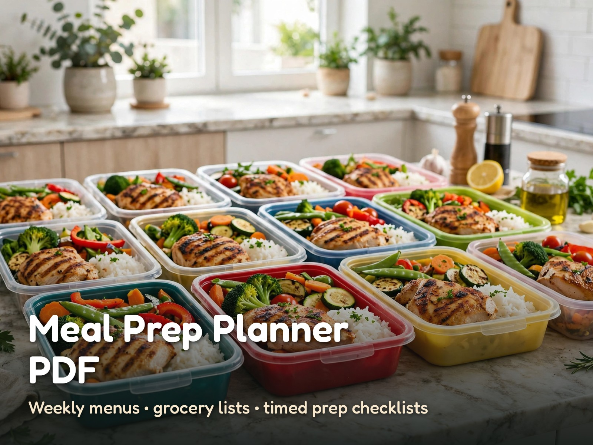

$9 USD — instant download
Meal Prep Planner PDF — Weekly Menus, Grocery Lists & Timed Prep Checklists for Busy Weeknights
Get it on GumroadMeal prep fails in predictable ways: seven different dinners cooked on Sunday until you hate your kitchen, or a fridge full of hopeful ingredients wilting by Thursday. This planner is the system that avoids both — plan the week before you shop for it, prep components instead of finished meals, and assemble dinner in about ten minutes on weeknights.
The system runs on a simple rhythm: plan in 15 minutes, shop in one trip, prep in one to two hours, assemble in about 10 minutes a night. Six menu formulas — grain bowls, sheet-pan dinners, soup pots, stir-fries, wrap nights and breakfast-for-dinner — keep the week varied without inventing new recipes weekly, and the planning rules keep it realistic: plan five dinners, not seven. A blank weekly menu template comes with four fully worked sample weeks — the reliable rotation, a vegetarian week, a tight-budget week and a 15-minute-weeknights week — each with its Sunday prep list.
The grocery list template is organised by store section so you walk the shop once, backed by a master checklist and the running-out-list habit. Two timed prep-day checklists — the full two-hour session and the 60-minute express — are sequenced minute by minute so appliances and you are never idle. A pantry staples backstop shelf turns ‘nothing for dinner’ into a 15-minute meal, storage and food-safety basics keep preps safe, and the leftover rotation system with its cook-once-eat-three-times matrix and 3-sauce rotation disguises the same chicken as three different dinners. Cost-down habits and a freezer inventory template close the loop.
This planner is menus, lists and routines — not medical or dietary advice, and it does not prescribe eating for any condition. The sample menus are ordinary everyday meals included to show the system working; adapt the templates to your own needs, allergies and any guidance from a qualified professional. What it promises is narrower and more useful: a week of dinners that mostly cooks itself on Sunday, and weeknights that stop being a daily negotiation.
This is a digital download — no physical item will be shipped. For personal use; please do not redistribute or resell the file.